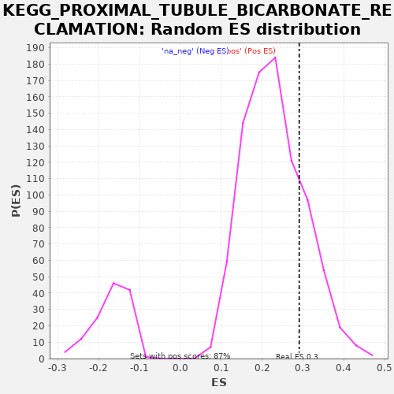

| | | Dataset | drug_embeddings_gsea |
| Phenotype | NoPhenotypeAvailable |
| Upregulated in class | na_pos |
| GeneSet | KEGG_PROXIMAL_TUBULE_BICARBONATE_RECLAMATION |
| Enrichment Score (ES) | 0.29094195 |
| Normalized Enrichment Score (NES) | 1.2686093 |
| Nominal p-value | 0.21034482 |
| FDR q-value | 0.68854594 |
| FWER p-Value | 1.0 |
Table: GSEA Results Summary
 Fig 1: Enrichment plot: KEGG_PROXIMAL_TUBULE_BICARBONATE_RECLAMATION
Fig 1: Enrichment plot: KEGG_PROXIMAL_TUBULE_BICARBONATE_RECLAMATION
Profile of the Running ES Score & Positions of GeneSet Members on the Rank Ordered List
| PROBE | GENE SYMBOL | GENE_TITLE | RANK IN GENE LIST | RANK METRIC SCORE | RUNNING ES | CORE ENRICHMENT | | 1 | ATP1B4 | | | 107 | 1.000 | 0.0482 | Yes |
| 2 | SLC4A4 | | | 113 | 1.000 | 0.1034 | Yes |
| 3 | ATP1A2 | | | 910 | 1.000 | 0.1046 | Yes |
| 4 | ATP1B2 | | | 1182 | 1.000 | 0.1416 | Yes |
| 5 | FXYD2 | | | 1637 | 1.000 | 0.1662 | Yes |
| 6 | ATP1A4 | | | 3593 | 1.000 | 0.0885 | Yes |
| 7 | ATP1A3 | | | 4225 | 0.929 | 0.0971 | Yes |
| 8 | CA4 | | | 4527 | 0.915 | 0.1273 | Yes |
| 9 | GLS2 | | | 4577 | 0.912 | 0.1746 | Yes |
| 10 | SLC9A3 | | | 4631 | 0.909 | 0.2215 | Yes |
| 11 | ATP1B3 | | | 5057 | 0.888 | 0.2418 | Yes |
| 12 | GLUD2 | | | 6859 | 0.797 | 0.1633 | Yes |
| 13 | SLC25A10 | | | 6998 | 0.790 | 0.1977 | Yes |
| 14 | AQP1 | | | 7312 | 0.773 | 0.2193 | Yes |
| 15 | PCK1 | | | 7978 | 0.735 | 0.2148 | Yes |
| 16 | ATP1A1 | | | 8000 | 0.734 | 0.2541 | Yes |
| 17 | CA2 | | | 8055 | 0.731 | 0.2909 | Yes |
| 18 | ATP1B1 | | | 8912 | 0.682 | 0.2705 | No |
| 19 | GLUD1 | | | 9657 | 0.635 | 0.2550 | No |
| 20 | GLS | | | 11769 | 0.565 | 0.1426 | No |
| 21 | MDH1 | | | 12695 | 0.541 | 0.1096 | No |
| 22 | PCK2 | | | 13839 | 0.483 | 0.0585 | No |
Table: GSEA details [plain text format]

Fig 2: KEGG_PROXIMAL_TUBULE_BICARBONATE_RECLAMATION: Random ES distribution
Gene set null distribution of ES for KEGG_PROXIMAL_TUBULE_BICARBONATE_RECLAMATION